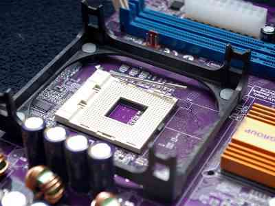

El procesador
Tabla
| Procesador | Núcs./hilos | Frec. base/turbo | Precio |
|---|---|---|---|
| Athlon 200GE | 2/4 | 3.2 GHz, sin turbo | 53.99 € |
| Ryzen 3 1200 | 4/4 | 3.1/3.4 GHz | 49.99 € |
| Core i3-9100F | 4/4 | 3.6/4.2 GHz | 89.99 € |
| Ryzen 5 1600 | 6/12 | 3.2/3.6 GHz | 101.99 € |
| Ryzen 5 2600 | 6/12 | 3.4/3.9 GHz | 134.99 € |
| Core i5-9400F | 6/6 | 2.9/4.1 GHz | 159.90 € |
| Ryzen 5 2600X | 6/12 | 3.6/4.2 GHz | 153.00 € |
| Ryzen 5 3600 | 6/12 | 3.6/4.2 GHz | 210.99 € |
| Ryzen 7 2700X | 8/16 | 3.7/4.3 GHz | 200.97 € |
| Ryzen 7 3700X | 8/16 | 3.6/4.4 GHz | 354.97 € |
| Ryzen 7 3800X | 8/16 | 3.9/4.5 GHz | 409.87 € |
| Core i7-9700K | 8/8 | 3.6/4.9 GHz | 378.90 € |
| Core i9-9900K | 8/16 | 3.6/5.0 GHz | 489.90 € |
| Ryzen 9 3900X | 12/24 | 3.8/4.6 GHz | 545.99 € |
Es la parte de la computadora compuesto por diversos circuitos que configuran el CPU o unidad
central de procesamiento.
También se le suele conocer como microprocesador, el cual actúa como el motor para hacer posible todo
proceso informático que se quiera realizar en la computadora.
Es considerado como el cerebro del sistema, ya que sin este la computadora no puede procesar ninguna
información, y a la vez no puede ejecutar ninguna acción.
Unidad de control
Es la parte con que se desactiva o activa los componentes del procesador. Con este se logra ejecutar y a
la
vez interpretar todas las instrucciones que están guardadas en la memoria principal.
La unidad de control (UC), en inglés: control unit (CU), es uno de los tres bloques funcionales
principales en los que se divide una unidad central de procesamiento (CPU). Los otros dos bloques son la
unidad de proceso y el bus de entrada/salida.
Su función es buscar las instrucciones en la memoria principal, decodificarlas (interpretación) y
ejecutarlas, empleando para ello la unidad de proceso.
Existen dos tipos de unidades de control: las cableadas, usadas generalmente en máquinas sencillas, y
las microprogramadas, propias de máquinas más complejas. En el primer caso, los componentes principales
son el circuito de lógica secuencial, el de control de estado, el de lógica combinacional y el de
emisión de reconocimiento de señales de control. En el segundo caso, la microprogramación de la UC se
encuentra almacenada en una micromemoria, a la cual se accede de manera secuencial para posteriormente
ir ejecutando cada una de las microinstrucciones.
Registros
Son zonas temporales de almacenamiento que se utilizan durante la ejecución de las instrucciones.
En arquitectura de ordenadores, un registro es una memoria de alta velocidad y poca capacidad, integrada
en
el microprocesador, que permite guardar transitoriamente y acceder a valores muy usados, generalmente en
operaciones matemáticas.
Los registros están en la cumbre de la jerarquía de memoria, y son la manera más rápida que tiene el
sistema
de almacenar datos. Los registros se miden generalmente por el número de bits que almacenan; por
ejemplo, un
"registro de 8 bits" o un "registro de 32 bits". Los registros generalmente se implementan en un banco
de
registros, pero antiguamente se usaban biestables individuales, memoria SRAM o formas aún más
primitivas.
El término es usado generalmente para referirse al grupo de registros que pueden ser directamente
indexados
como operandos de una instrucción, como está definido en el conjunto de instrucciones. Sin embargo, los
microprocesadores tienen además muchos otros registros que se usan con un propósito específico, como el
contador de programa. Por ejemplo, en la arquitectura IA32, el conjunto de instrucciones define 8
registros
de 32 bits.
Unidad aritmética y lógica
Esta parte es la que tiene el rol de ejecutar todas las operaciones de transformación de datos, como son
las
operaciones matemáticas.
En computación, la unidad aritmética lógica o unidad aritmético-lógica, también conocida como ALU
(siglas en inglés de arithmetic logic unit), es un circuito digital que calcula operaciones aritméticas
(como suma, resta, multiplicación, etc.) y operaciones lógicas (si, y, o, no), entre valores
(generalmente uno o dos) de los argumentos.
Por mucho, los circuitos electrónicos más complejos son los que están construidos dentro de los chips de
microprocesadores modernos. Por lo tanto, estos procesadores tienen dentro de ellos un ALU muy complejo
y potente. De hecho, un microprocesador moderno (y los mainframes) puede tener múltiples núcleos, cada
núcleo con múltiples unidades de ejecución, cada una de ellas con múltiples ALU.
Buses de entradas y salidas
Se trata de un sistema digital encargado de la transferencia de información de un componente a otro de un
ordenador, o crea la conexión entre dos o mas computadores.
Además, los modernos buses serie están formados por varios canales: En este caso se transmite por varios
buses serie simultáneamente.
En los primeros computadores electrónicos, era muy habitual encontrar buses paralelos, quedando los
buses serie dedicados para funciones de menor entidad y dispositivos lentos, como el
teclado.
La tendencia en los últimos años es reemplazar los buses paralelos por buses serie (que suelen ser
multicanal). Estos son más difíciles de implementar, pero están dejando velocidades de transferencia más
elevadas, además de permitir longitudes de cable mayores..
Encapsulado
Se encuentra cubriendo la oblea de silicio, el cual brinda una mayor protección y consistencia,
impidiendo
así cualquier deterioro.
Los primeros circuitos integrados tenían encapsulados planos de cerámica. Fueron utilizados por los
militares durante muchos años por su fiabilidad y pequeño tamaño. Los circuitos integrados comerciales
adoptaron la forma (DIP), al comienzo en cerámica y más tarde en plástico.
En la década de
1980 en los
circuitos integrados VLSI el número de de patillas excedió el límite práctico para el encapsulado DIP,
llegando nuevos formatos como pin grid array (PGA), (LCC) (QFP).
Los componentes de montaje
superficial,
aparecieron en la década de 1980 y se hicieron populares. Estos nuevos formatos de encapsulado de
montaje superficia reducir aún más el tamaño de los equipos electrónicos de los que forman parte.
Chipset
Se trata de una serie de chips que se encargan de mantener controlada las funciones del equipo.
Un chipset (traducido como circuito integrado auxiliar) es el conjunto de circuitos
integrados diseñados
con base en la arquitectura de un procesador (en algunos casos, diseñados como parte integral de esa
arquitectura), permitiendo que ese tipo de procesadores funcionen en una placa base. Sirven de puente de
comunicación con el resto de componentes de la placa, como son la memoria, las tarjetas de expansión,
los puertos USB, ratón, teclado, etc.1
Las placas base modernas suelen incluir dos integrados, denominados puente norte y puente sur, y suelen
ser los circuitos integrados más grandes después de la GPU y el microprocesador.
Las últimas
placa base
carecen de puente norte, ya que los procesadores de última generación lo llevan integrado.
Motor de ejecución
Considerada como parte importante del procesador, el cual concentra las unidades de FPU y las de ALU.
Unidad FPU
Se designa por sus siglas la unidad de punto flotante, la cual actúa como coprocesador matemático, el cual se encarga de las sumas y multiplicaciones.
Unidad ALU
Refiere a la unidad aritmético lógica, la cual se encarga de todas las operaciones que se efectúan con números enteros.
Zócalo
Refiere al sitio donde es colocado el procesador, el cual crea una conexión directa con el resto del
equipo.
El zócalo de CPU (socket en inglés) es un tipo de zócalo electrónico (sistema electromecánico de soporte
y conexión eléctrica) instalado en la placa base, que se usa para fijar y conectar el microprocesador,
sin soldarlo lo cual permite ser extraído después.
Por ello, se utiliza en equipos de
arquitectura
abierta, donde se busca que haya modularidad en la variedad de componentes, permitiendo el cambio de la
tarjeta o el integrado. En los equipos de arquitectura propietaria, los integrados se añaden sobre la
placa base soldándolo, como sucede en las videoconsolas.
Existen variantes desde 40 conexiones para integrados pequeños, hasta más de 1300 para
microprocesadores, los mecanismos de retención del integrado y de conexión dependen de cada tipo de
zócalo, aunque en la actualidad predomina el uso de zócalo con pines.
Memoria cache
Se refiere a la zona donde los datos de mayor frecuencia del computador son almacenados.
Se trata de una memoria que trabaja a gran velocidad, con la cual se tiene acceso a los datos que serán
usados en ciertas operaciones sin requerir ayuda de la memoria RAM. Este proceso de obtención de datos
se
realiza en un tiempo muy corto.
Puertos
Se trata del medio por donde se comunica el procesador al mundo externo. Este se considera como un medio análogo a la línea de teléfono. El procesador presenta diversos números de puerto a través de los cuales se conecta cualquier circuito de la computadora, estos números son usados por el puerto como si fuese un número de teléfono para así llamar a aquellos circuitos especiales.
Pepelines
La arquitectura en pipeline (basada en filtros) consiste en ir transformando un flujo de datos en un
proceso comprendido por varias fases secuenciales, siendo la entrada de cada una la salida de la
anterior.
Esta arquitectura es muy común en el desarrollo de programas para el intérprete de comandos, ya que se
pueden conectar comandos fácilmente con tuberías (pipe).
También es una arquitectura muy natural en el paradigma de programación funcional, ya que equivale a la
composición de funciones matemáticas.
Fetch
Se encarga de enviar todas las instrucciones al decodificador.
Un ciclo de instrucción (también llamado ciclo de fetch-and-execute o ciclo de fetch-decode-execute en
inglés) es el período que tarda la unidad central de proceso (CPU) en ejecutar una instrucción de
lenguaje máquina.
Comprende una secuencia de acciones determinada que debe llevar a cabo la CPU para ejecutar cada
instrucción en un programa. Cada instrucción del juego de instrucciones de una CPU, puede requerir
diferente número de ciclos de instrucción para su ejecución. Un ciclo de instrucción está formado por
uno o más ciclos máquina.
Para que cualquier sistema de proceso de datos basado en microprocesador (por ejemplo un ordenador) o
microcontrolador (por ejemplo un reproductor de MP3) realice una tarea (programa) primero se debe buscar
cada instrucción en la memoria principal y luego ejecutarla.
Prefetch
Refiere a una pre-lectura de la instrucción que se efectúa desde la memoria principal.
Decodificador
Este se encarga de evaluar que tipo de instrucción es y las tareas que se deben de realizar.
Controlador de memoria
Se trata de un elemento localizado en la parte interna del procesador que controla la comunicación entre la memoria RAM y el micro.
Coprocesador matemático
También llamado como Unidad de coma flotante o FPU. Esta parte del procesador es la que realiza diversos tipos de cálculos matemáticos. Es considerada junto a la memoria, a la unidad de control, al bus de datos y a los registros como la parte lógica del procesador.
Disipador de calor
Con este el procesador logra mantenerse a una perfecta temperatura, garantizando un máximo rendimiento. El calor en el procesador se produce por la pérdida de energía que ocurre en el, lo cual se transforma en calor.
Ejecución superescalar
Es un componente añadido recientemente el cual logra ejecutar varias instrucciones a la vez por ciclo de reloj.